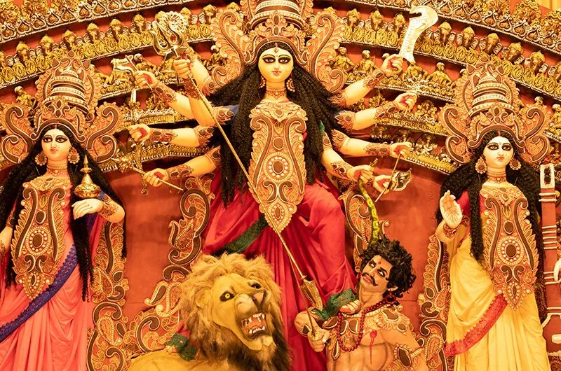

Durga Puja is a significant Hindu festival celebrated with immense enthusiasm and devotion, primarily in the
Indian state of West Bengal and other parts of India. This festival honors Goddess Durga, the divine
embodiment of feminine power and strength, and symbolizes the triumph of good over evil.
Durga Puja usually spans over a period of ten days, with the main celebrations taking place during the last
four days. The festival typically falls in the months of September or October, corresponding to the Hindu
calendar month of Ashwin.
Elaborate and artistic temporary structures called "pandals" are constructed to house the grand idols of
Goddess Durga along with her children - Saraswati, Lakshmi, Ganesha, and Kartikeya. These idols are
exquisitely crafted by skilled artisans and are often characterized by intricate detailing and vibrant
decorations. The pandals are adorned with creative themes and designs that often reflect social, cultural,
or political issues, making Durga Puja a blend of religious and artistic expression.
The festivities involve a series of rituals and traditions. Devotees offer prayers, perform aarti (ritual of
waving lamps), and make offerings of flowers, fruits, and sweets to the goddess. Cultural programs,
traditional dances like Dandiya and Dhunuchi Naach, music performances, and theatrical presentations are
organized during these days, fostering a sense of community and joy among people.
One of the highlights of Durga Puja is the "Dhunuchi Naach," a dance performed with earthen pots containing
burning aromatic substances. The rhythmic beats of drums and traditional instruments create an electrifying
atmosphere, where devotees dance in front of the goddess's idol as an act of devotion and celebration.
The climax of the festival arrives on the tenth day, known as Vijaya Dashami or Dussehra. On this day, the
idols are taken in grand processions through the streets accompanied by music and dance, and then immersed
in water bodies, symbolizing the departure of Goddess Durga to her divine abode.
Durga Puja is not just a religious festival but also a cultural extravaganza that brings people from all
walks of life together. It encapsulates the essence of devotion, art, and community spirit, making it a
cherished and eagerly awaited event each year.
